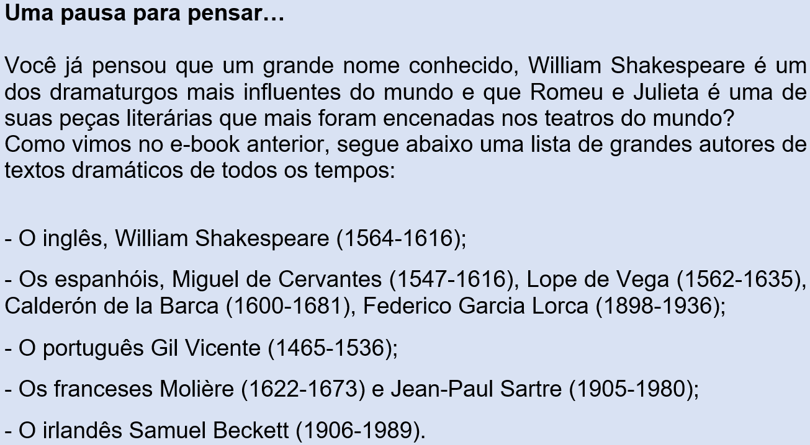
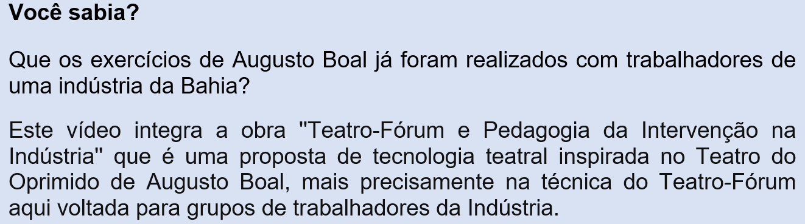
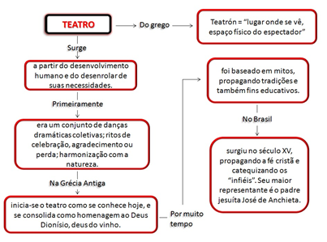

Capítulo 4: A indústria têxtil e a arte de representar
Questão-problema:
Você já assistiu alguma peça de teatro? Já pensou sobre todo o processo de criação artística e industrialização de figurinos?
Contextualizando
Nós vamos, com o vídeo a seguir, conhecer uma das mais famosas Companhias de Teatro do mundo: Teatro du Soleil. É uma das maiores companhias mundiais, que possui um
complexo (de cenários, oficinas, palcos e salas de ensaio) instalado numa antiga fábrica de munições de Paris. A atriz brasileira Juliana Carneiro da Cunha, que faz
parte da “troupe” desde 1990, revela os bastidores desse teatro. Você ficará admirado com a importância que vários trabalhadores têm para que um espetáculo aconteça.
Fonte: http://tvbrasil.ebc.com.br/artedoartista/episodio/theatre-du-soleil
Assista aos vídeos abaixo, que explicam de forma dinâmica um pouco mais sobre o universo da linguagem teatral:
Reconstruindo conhecimentos:
O primeiro estabelecimento fabril da área do vestuário no Rio Grande do Sul data de 1873, iniciando uma trajetória que se consolida ao longo do tempo pelas várias regiões do Estado.
É fácil estabelecer ligação entre esse ramo da indústria e a atividade cênica - teatro, circo, dança e ópera fazem parte das chamadas artes cênicas. Da confecção da malha para a dança clássica ou contemporânea, aos rebuscados figurinos da ópera; dos longos tecidos pendentes do alto do circo, onde os acrobatas deixam o público “com o coração na boca”; ao simples e surrado traje dos personagens da peça de teatro “Esperando Godot”, de Samuel Beckett, ou ao terno formal do marido de Nora, em “Casa de Bonecas”, de Henrik Ibsen, tudo nos remete à importância das vestes.
Tanto no teatro como na vida!
Origem
É bastante provável que o teatro ocidental tenha sua origem na Antiga Grécia a partir das celebrações em honra de Dionísio – divindade que representava os prazeres e as dádivas da natureza e era saudada com procissões ricas em cantos, danças e pantomimas, os chamados ditirambos. Os grandes teatros gregos, construídos em pedra e dotados de acústica perfeita existem até hoje, quase dois mil e quinhentos anos após construídos. Alguns deles podiam receber cerca de 17 mil espectadores. As tragédias e comédias daquele período são encenadas até hoje no mundo todo.
Antigo Teatro na Acrópole Grega, Atenas (Fonte: https://www.tudosobreatenas.com/odeao-herodes-atico)

O teatro no Rio Grande do Sul
O teatro no Rio Grande do Sul sempre foi muito forte. Porto Alegre, que tem o belo Theatro São Pedro, inaugurado em 1858, viu serem apresentados 52 espetáculos no ano de 1900. Um significativo contingente de atores e atrizes saiu daqui, em diferentes épocas, para brilhar no teatro, no cinema e na televisão do centro do país. E os que aqui permaneceram e permanecem, sempre produziram um teatro de primeira qualidade.
Interior do Theatro São Pedro (Fonte: http://theatrosaopedro.org.br/temporada-2018-do-theatro-sao-pedro/)
O teatro no Brasil
Na dramaturgia brasileira, como já vimos, cabe destacar Martins Pena (1815-1848), Nelson Rodrigues (1912-1980), Dias Gomes (1922-1999), Augusto Boal (1931-2009) e Oduvaldo Vianna Filho (1936-1974) Dentre os autores gaúchos é necessário citar Álvaro Moreyra (1888-1964), Edy Lima (1924), Ivo Bender (1936), Carlos Carvalho (1939-1985), Ronald Radde (1945-2016). Augusto Boal, um dos fundadores do Teatro de Arena de São Paulo, desenvolveu as teorias do “Teatro do Oprimido”. Como já vimos, ele preconiza que “todo mundo pode fazer teatro, inclusive os atores”.
Para entender mais
Segue vídeo de um grupo realizando um jogo dramático de Augusto Boal. Eles representam a engrenagem de uma máquina.
“Oficina realizada no Peru pelo Centro de Teatro do Oprimido CTO com movimentos sociais, professores Artes Cenicas PUC-Peru, red de arte y transformacion social. 17 a 21 de janeiro de 2011”.

Praticando:
1) Abaixo estão indicadas algumas atividades de fazer teatral baseados na tomada de consciência do próprio corpo. O ideal é que os jogos sejam uma atividade de grupo.
Todavia, assim como um “game”, podemos experimentá-los sozinhos ou em dupla. Para isso, apresentamos algumas sugestões.
1. OUVINDO O AMBIENTE – Foco: Ouvir o maior número de sons possível no ambiente próximo.
Instrução: Ouça todos os sons à sua volta – até os mais imperceptíveis! Preste atenção! Procure ouvir o maior número de sons possível! Avaliação: Quais sons Você ouviu? Quantos? Faça um relato escrito do exercício.
Nota: Esse exercício pode ser realizado em qualquer ambiente interno ou externo. Colecione os relatos dos jogos e exercícios realizados.
2. OUVINDO MÚSICA – Foco: Concentração.
Instrução: Procure uma música exclusivamente instrumental (sonata, concerto, sinfonia, de compositores como Bach, Villa-Lobos, Tchaikovsky, Mozart, etc). Concentre-se no som e timbre dos diferentes instrumentos; tente identificá-los (escreva); perceba quando entra um novo instrumento.
Avaliação: Escreva detalhadamente o que ouviu e sentiu.
3. MÚSICA E DESENHO – Foco: Concentração, Relaxamento.
Instrução: A partir de uma música instrumental, relaxante e tranquila, concentre-se no som e procure desenhar livremente. Use uma folha grande e o material que desejar: lápis preto ou de cor, giz de cera, lápis pastel, carvão etc. e trabalhe livremente.
4. CAMINHADA NO ESPAÇO – Foco: Sustentar a si próprio ou deixar que a substância do espaço o sustente, de acordo com a instrução. Instrução: Você atravessa o espaço e deixa que o espaço atravesse você! Entre dentro de seu corpo e sinta as tensões! Sinta seus ombros! Sinta a coluna de cima a baixo! Sinta o seu interior! Observe! Anote! Você é seu único suporte! Você sustenta o seu rosto! Seus dedos dos pés! Seu esqueleto todo! Se você não se sustentasse, você se despedaçaria em mil partes! Agora mude! Caminhe pelo espaço e deixe que o espaço o sustente! O seu corpo entenderá! Perceba o que o seu corpo está sentindo! Coloque espaço onde estão seus olhos! Deixe que o espaço sustente seus olhos! Deixe que o espaço sustente seu rosto! Seus ombros! Agora mude! Agora é você quem se sustenta novamente!
2) Na Grécia Antiga o teatro nasceu de rituais que compunham os festivais dedicados à ___________________________ , deus das festividades.
Resolução: Dionísio, é o deus grego do vinho. É considerado também o deus grego da natureza, da alegria e do teatro.
3) Uma peça teatral é escrita ou adaptada por seu __________. É ele quem cria os personagens, e todos os outros elementos que fazem parte da linguagem teatral. A palavra que completa a frase é:
a) ( ) cineasta
b) ( ) telespectador
c) ( ) dramaturgo
d) ( ) ator
e) ( ) adaptador
Resolução: Alternativa C. Dramaturgo é uma expressão que tem origem no grego "dramatourgós", que significa autor de peças de teatro.
O que aprendi:
Você pode acompanhar e aprender sobre as origens do teatro e algumas de suas características. Que o jogo dramático está presente no cotidiano de qualquer pessoa (desde criança) e que a expressão teatral pode ser uma ferramenta para que a vida possa ser mais alegre.

Mesmo que na sua cidade não haja um “teatro”, procure onde ocorrem apresentações. Há muitos festivais e mostras de teatro em que a entrada é franca, assim como existem muitos teatros de rua, teatros de bonecos, ou mesmo oficinas de teatro para atores e não atores (como preconizava Augusto Boal).